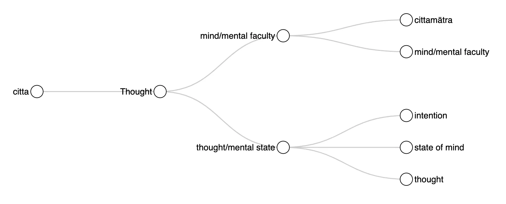
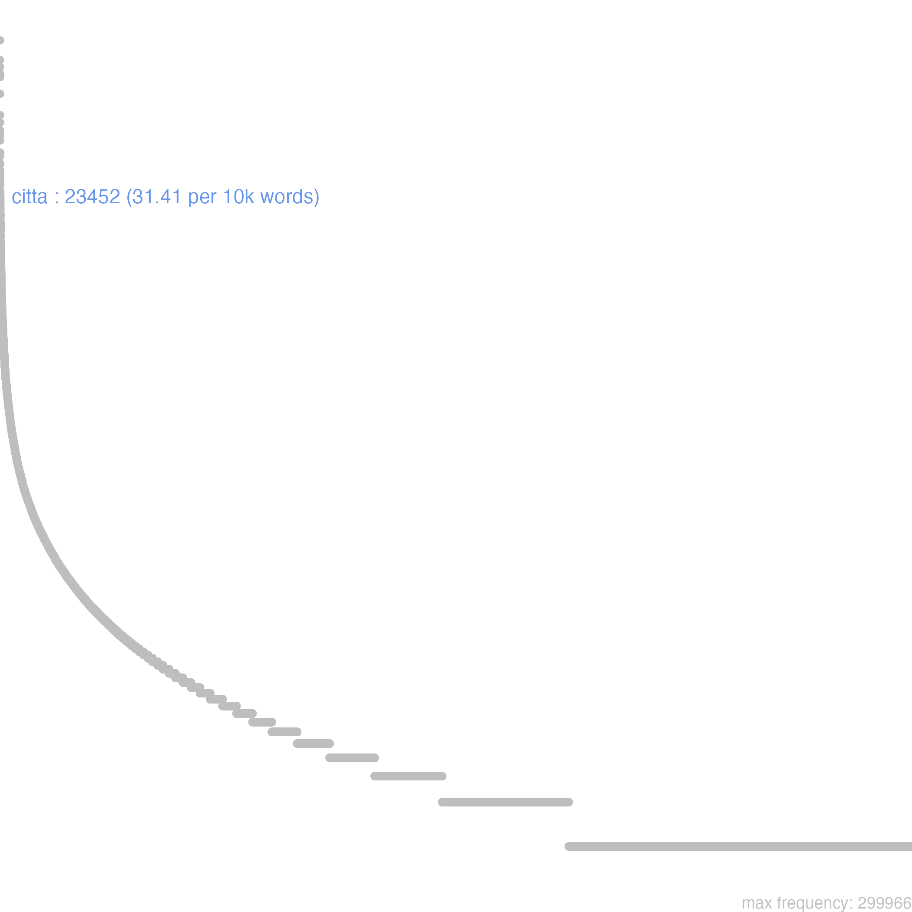
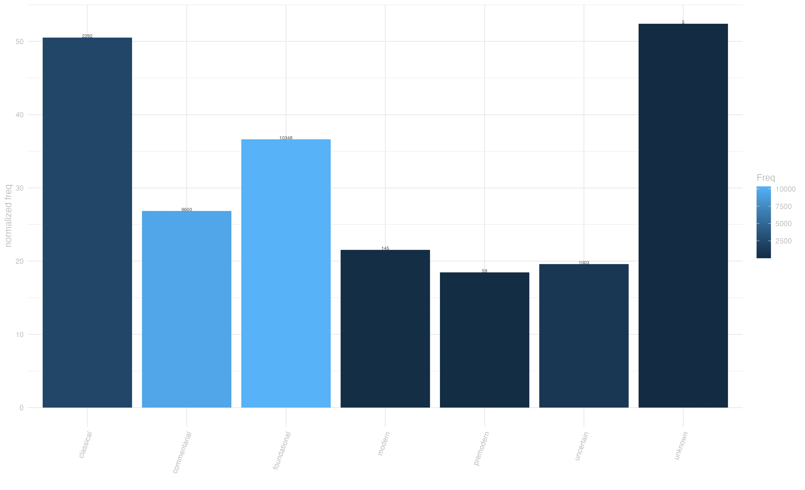
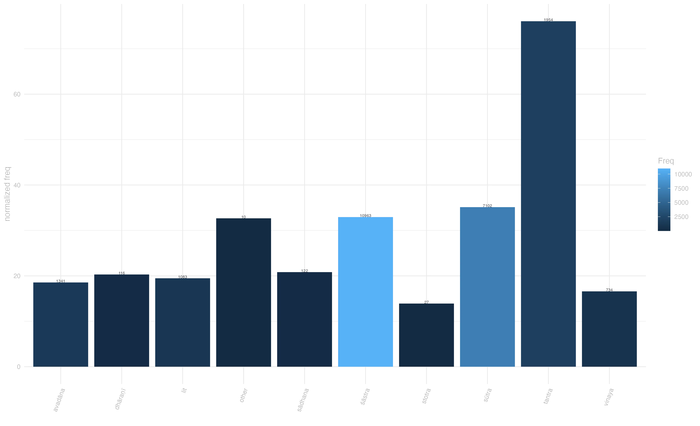
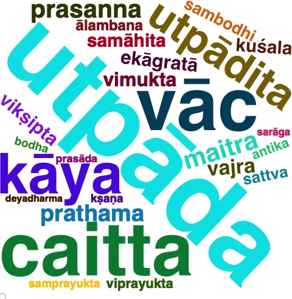

4 citta
saṃkalpāj jāyate rāgaś cittaṃ rāgeṇa muhyate / mūḍhasya saṃgatir bhavati jāyate na ca mucyate // [laṅkāvatārasūtra, 104] “From imagination, greed is born, and by greed the mind [is] stupefied; there is attachment to stupefaction, and there is no emancipation from birth [and death].” [Suzuki 220]
4.0.1 overview
Citta pertains squarely to the semantic domain of “Thought”, where it articulates two closely connected, and sometimes hard to distinguish meanings. On the one hand, it denotes thought, the thinking process and the content of mind. On the other, it means the mind itself, the faculty that generates and hosts thoughts (mind/mental faculty).
These senses lie on a semantic continuum, and depending on whether citta points more to the mental faculty or to the mental content, several further semantic nuances can be observed in our corpus. These nuances are typically brought about by specific contextual patterns. Listed with manas and vijñāna in discussions of the psychological dimension of sentient beings, citta typically denotes our fundamental cognitive capacity or mental apparatus.1 This meaning finds a specialized application in philosophical literature, in the form of the compound cittamātra, a cornerstone of the Mahāyāna interpretation of perceived reality as illusion.2
Closer to the ‘mental content’ end of its semantic spectrum, citta can denote intention, a subsense that emphasises the emotional and volitional aspects of mental life, rather than intellect. The most prominent use of citta in this sense is instantiated in the compound bodhicitta, which denotes setting one’s mind on the path towards enlightenment.3 A closely related subsesense is state of mind, which refers more generally to the mental and emotional moods and dispositions of sentient beings. Conversely, the subsense thought captures the discursive, articulated outcome of the faculty of thinking. In this sense, the compound paracitta is used to indicate the mental content of other people and mind-reading abilities (Aśokāvadāna, 103).4

4.0.2 frequency
Citta is a among the top-frequency words in our corpus. It is also exceptionally evenly dispersed across genres and periods, although its frequency appears to decline with time. The normalized frequency of this word spikes in the classical period, but this probably due to its prominence in just two texts, the Abhidharmakośabhāṣya and Laṅkāvatārasūtra.
As for distribution over genres, citta is especially densely used in tantra literature, but also very frequent in sūtra and śāstras.
 ## disperion by genre



4.0.3 context
Several collocational patterns featuring citta are noteworthy. Frequent compunds include “prasanna-citta” (clear/pleased mind), “samāhita-citta” (concentrated mind), “maitra-citta” (loving mind), and “bodhi-citta” (the mind set towards enlightenment).5 Technical philosophical expressions also emerge, particularly “citta-mātra” (mind-only) in Yogācāra contexts, and “citta-caittāḥ” (mind and mental factors) in Abhidharma literature.6

4.0.4 connotation
Remarkably, citta never shows negative semantic prosody in the sample of sentences we manually annotated. Neutral usage predominates in all semantic permutations of this word. however, the subsense state of mind often acquires a positive semantic-prosody (about 40% of the times in our annotated data), as it is associated with purified, concentrated, or compassionate mental states, as exemplified in passages describing “prasanna-citta” (clear/serene mind) or “maitra-citta” (loving mind). A particularly illuminating example of positive usage appears in the Karuṇāpuṇḍarīkasūtra: “sarve te bodhisattvā maitra-cittāḥ snigdha-cittā a-kaluṣa-cittā dānta-cittāḥ kṣamā-cittāḥ samāhita-cittāḥ prasanna-cittā” (all those bodhisattvas have loving minds, gentle minds, undefiled minds, tamed minds, patient minds, concentrated minds, clear minds). This passage demonstrates the compound formations that characterize much of citta’s usage in describing idealized mental states. Conversely, neutral-negative semantic prosody occurs in passages related to afflicted, confused, or harmful mental states, such as “duṣṭa-citta” (corrupted mind) or “pāpa-citta” (evil mind).
This entry is based on version 6 of of the Visual Dictionary of Buddhist Sanskrit, see data at zenodo.org/records/13985112
sva-citta-paridamanam etad buddh-^ānuśāsanam // 8 prātimokṣasūtra_mūlasarvāstivāda 0
“Not to do any evil, to attain good, to completely subdue one’s own mind; this is the Teaching of the Buddhas.” [Prebish 111]↩︎xxx citta-mātram idaṃ sarvam iti yā deśanā muneḥ / uttrāsa-parihār-^ārthaṃ bālānāṃ sā na a-tattvataḥ // bodhicittavivaraṇa 25
“The Anchorite’s doctrine that ‘The entire [world] is mere mind’ is [in fact] intended to remove the fear of fools. It is not a [doctrine] concerning reality.” [Lindtner 193]↩︎sthity-āvaraṇaṃ bodhau tasyā a-kopyatvād dhṛty-āvaraṇaṃ samādāne bodhi-cittasy ^ādhāra-bhūtatvād abhivyakty-āvaraṇaṃ dhīmatve tasya prakāśanīyatvāt / madhyāntavibhāgabhāṣya 31
“An obstruction to its maintenance is an obstruction to enlightenment (i.e. the enlightenment-citta), because of its resulting in an absence of anger and frustration. An obstruction to sustaining it is an obstruction to the full taking up of Saṃsāra, because this becomes the support for the enlightenment-citta.” [Anacker 226]↩︎para-citta-vidāv etau mah-ātmānau / [aśokāvadāna, 103]
“These two can read other people’s minds!” [Strong 267]↩︎sarve te bodhisattvā maitra-cittāḥ snigdha-cittā a-kaluṣa-cittā dānta-cittāḥ kṣamā-cittāḥ samāhita-cittāḥ prasanna-cittā a-pratihata-cittāḥ śuddha-cittāḥ kalyāṇa-cittā dharma-prīti-cittāḥ sarva-sattvānāṃ kleśa-praśamana-cittāḥ pṛthivī-sama-cittā laukikāyāṃ kathāyām an-abhirata-cittā lokottarāyāṃ kathāyāṃ s-ābhirata-cittāḥ sarva-kuśala-dharma-paryeṣṭi-cittā nirupadhau karuṇāpuṇḍarīkasūtra 15
“All those Bodhisattvas have friendly thoughts, kind thoughts, affectionate thoughts, pure thoughts, controlled thoughts, patient thoughts, concentrated thoughts, gracious thoughts, unobstructed thoughts, purified thoughts, good thoughts, thoughts in the joy of the Doctrine, thoughts which assuage the afflictions of all beings, thoughts which are smooth as the earth, thoughts which do not delight in worldly talk, thoughta which delight in supra-worldly (talk), thoughts which strive for the Doctrine and all good actions, thoughts which are always applied to non attachment, …” [Weiler 137-38]↩︎a-bhūta-parikalpaś ca citta-caittās tri-dhātukāḥ / madhyāntavibhāgabhāṣya 20
“And the construction of that which was not is the cittas and caittas of the three realms.” [Anacker 214]↩︎